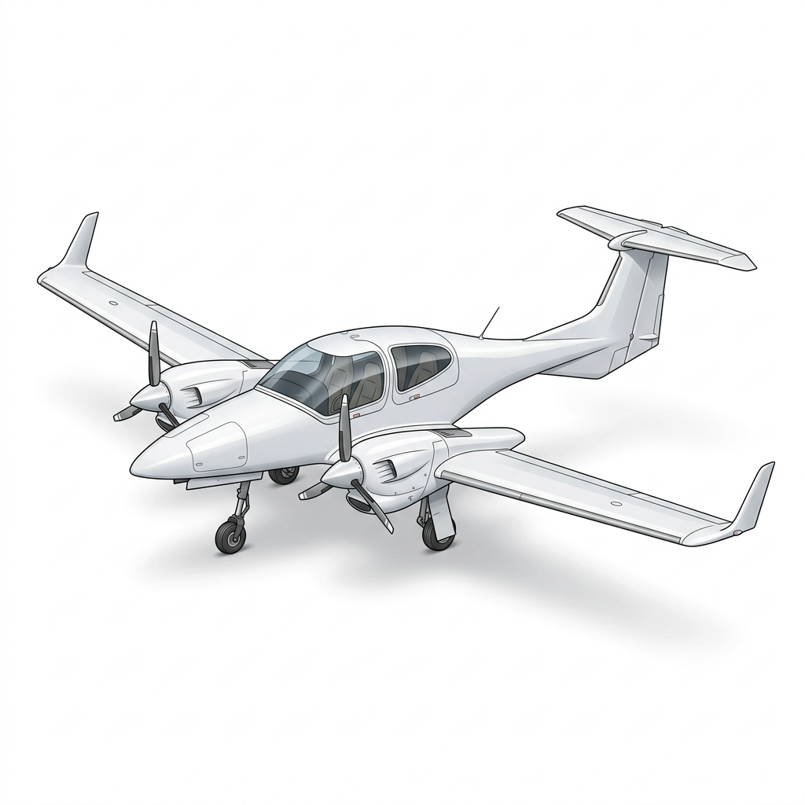
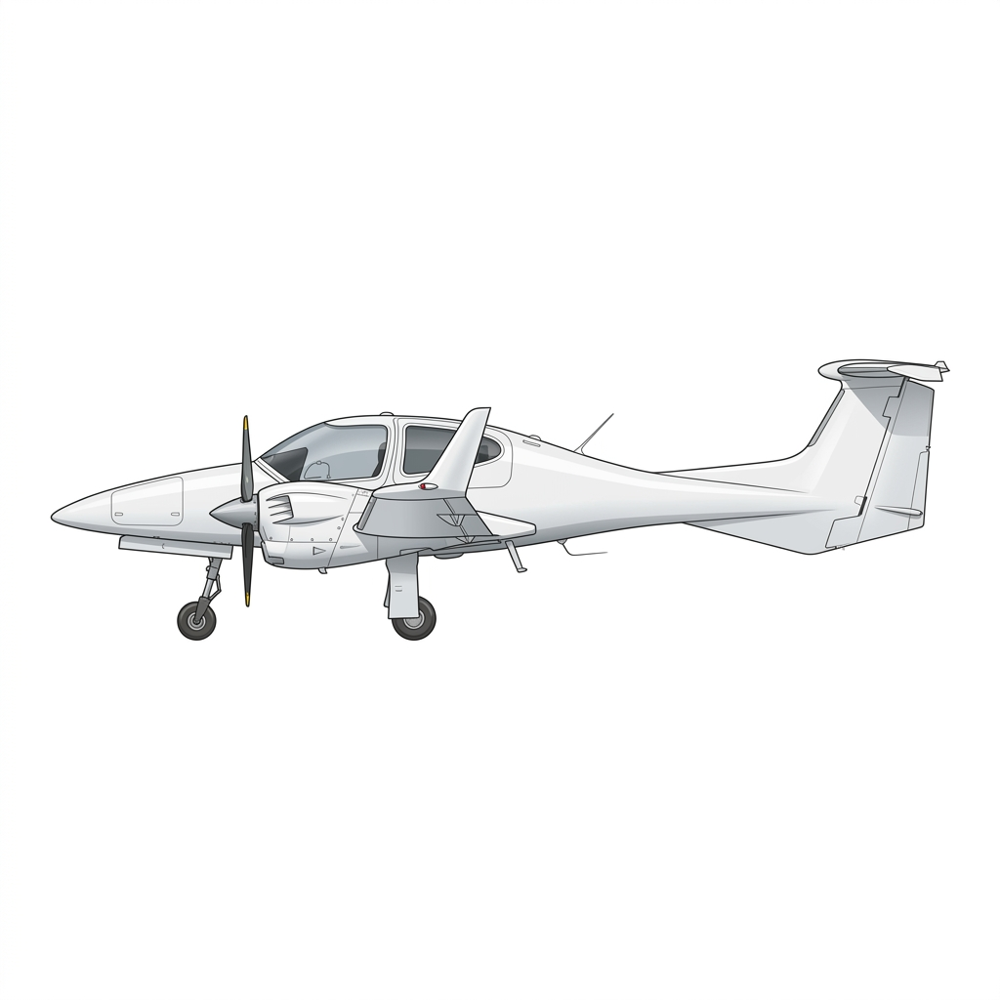

Before you ever push a power lever forward, you need to know the machine you are strapping into. This first chapter is your walk-around briefing for the DA-42 NG — what it is, what turns the propellers, and the handful of numbers the examiner expects to fall out of your mouth without you reaching for a manual. Learn this chapter well and the rest of the type-specific paper becomes a lot easier, because everything that follows hangs off this frame.
The DA-42 NG is a four-seat, twin-engine light aircraft built largely from composite material — carbon and glass-fibre reinforced plastic rather than riveted aluminium. It sits on a fully retractable tricycle undercarriage and wears a T-tail, with the tailplane carried high on top of the fin, clear of the propeller wash and the wing wake.
Two things make it stand apart from the trainers most of you have flown up to now. First, it is a diesel twin — the engines burn jet fuel, not AVGAS, through compression ignition. Second, it is a glass cockpit aircraft from nose to tail, built around an integrated avionics suite rather than a panel full of separate steam gauges. Keep both of those in mind; they colour almost every system you are about to study.

You do not need to memorise every figure on the drawing, but a few dimensions come up again and again — in performance planning, in parking and taxi judgement, and in the exam. Treat these as approximate working numbers.
| Dimension | Metric | Imperial |
|---|---|---|
| Wing span | 13.42 m (13.55 m over the wingtip lights) | 44 ft (44.5 ft) |
| Length | 8.56 m | 28 ft 1 in |
| Height | 2.49 m | 8 ft 2 in |
| Wing area | 16.29 m² | 175.3 sq ft |
| Aspect ratio | 11.06 — a long, slender wing | |
| Undercarriage track | 2.95 m | 9 ft 8 in |
| Wheelbase | 1.735 m | 5 ft 8 in |
Hanging off each wing is an Austro Engine E4-B: a liquid-cooled, four-cylinder, four-stroke, turbocharged compression-ignition (diesel) engine with common-rail direct injection and an intercooler. It runs on Jet A-1, and it is managed not by cables and a mixture knob but by a digital Electronic Engine Control Unit — the EECU. You set a percentage of power on a single lever and the electronics take care of fuelling, boost and propeller pitch behind the scenes.
Between the engine and the propeller sits a reduction gearbox with a ratio of 1 : 1.69, so the propeller turns considerably slower than the crankshaft. The propeller itself is an MT three-blade, constant-speed, fully-feathering unit with wood-composite blades, controlled hydraulically through that same EECU.
| Item | Figure |
|---|---|
| Engines | 2 × Austro Engine E4-B (turbo-diesel, Jet A-1) |
| Max take-off power | 100% ≈ 123.5 kW, limited to 5 minutes, at 2300 propeller RPM |
| Max continuous power | 92% ≈ 114 kW, at 2100 propeller RPM |
| Propeller overspeed limit | 2500 RPM, maximum 20 seconds |
| Reduction gear ratio | 1 : 1.69 |
| Propeller | 3-blade, constant-speed, feathering (MT, wood-composite) |
On any twin, the single biggest threat is losing an engine. A windmilling dead propeller creates enormous drag and swings the aircraft towards the failed side. The DA-42 NG's propellers are feathering: the blades can be turned edge-on to the airflow so the dead propeller stops and stops fighting you. On this aircraft feathering happens as part of shutting the engine down with its master switch, and it is only available above roughly 1300 propeller RPM — a detail we will return to when we cover engine-out handling.
Fuel is carried in an aluminium tank in each wing. In the standard fit each wing tank holds 26.0 US gallons total, of which 25.0 US gallons (94.6 litres) are usable — the remaining 1 US gallon per side is trapped and unusable. That gives 50 US gallons usable across the aeroplane. Some airframes carry an optional auxiliary tank in each engine nacelle holding 13.7 US gallons total / 13.2 usable a side, which is transferred into the main tanks by electric pumps in flight — taking the total to about 76 US gallons usable.
Normally the left engine feeds from the left tank and the right from the right. A crossfeed facility lets either engine draw from the opposite tank — useful for balancing fuel during a long single-engine flight — but there are firm rules about when you may and may not use it, which belong to the fuel-system chapter.
The DA-42 NG is built around an integrated glass avionics suite. In front of the pilot is a Primary Flight Display presenting attitude, airspeed, altitude and heading in one picture; alongside it a Multi-Function Display carries the engine instruments, the moving map and the systems pages. The two screens are backed by a digital autopilot and flight director, and by a small independent standby instrument so you are never left blind if the main displays fail.
You do not need to be a Garmin systems engineer for the CPL paper, but you do need to know what each display shows, where the engine indications live, and which failures downgrade the autopilot. We build all of that up in the avionics chapter — for now, just fix the layout in your mind: PFD in front of you, MFD in the centre, standby instrument as your last line of defence.
If you take nothing else from this chapter into the exam hall, take these. Every one of them is tested, and every one of them will reappear — properly explained — in the limitations chapter.
| Item | Value |
|---|---|
| Maximum take-off mass (standard) | 1900 kg (4189 lb) |
| Maximum landing mass (standard) | 1805 kg (3979 lb) |
| Maximum zero-fuel mass (standard) | 1765 kg (3891 lb) |
| VNE — never exceed | 188 KIAS |
| VNO — max structural cruising | 151 KIAS |
| VYSE — best climb, one engine out (blue line) | 85 KIAS |
| VMCA — min control speed, airborne (red line) | 76 KIAS |
| VLE / VLO extend — gear down / extending | 188 KIAS |
| VLO retract — gear retracting | 152 KIAS |
| VFE — flaps APP / LDG | 133 / 113 KIAS |
That is your orientation complete. You now know the airframe, the engines, the fuel, the cockpit, and the headline limits. From here each chapter takes one system and opens it up — the powerplant and its EECU, the fuel system and its crossfeed logic, the electrical system, the landing gear and brakes, the avionics, and then the limitations, normal drills and emergency handling that tie them all together. Study them in order. The aeroplane was designed as one integrated machine, and that is how you should learn it.